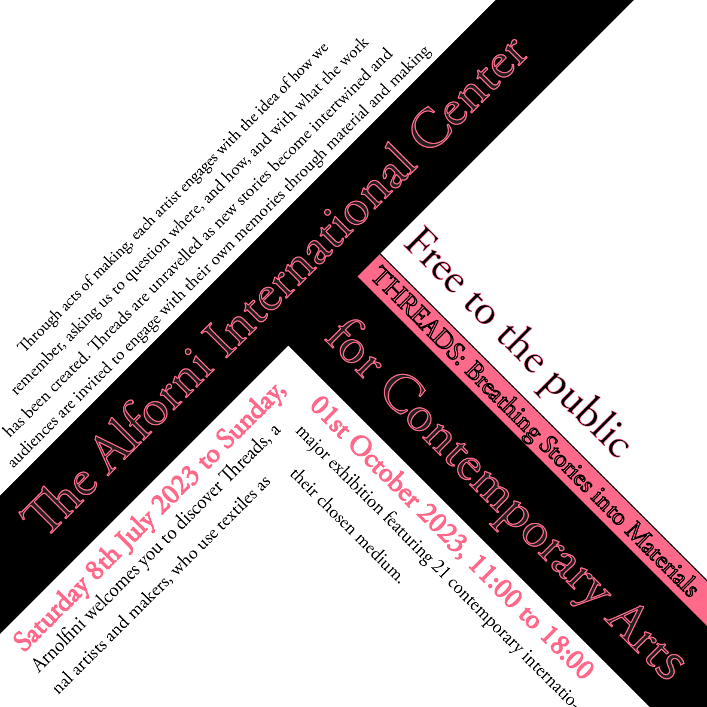
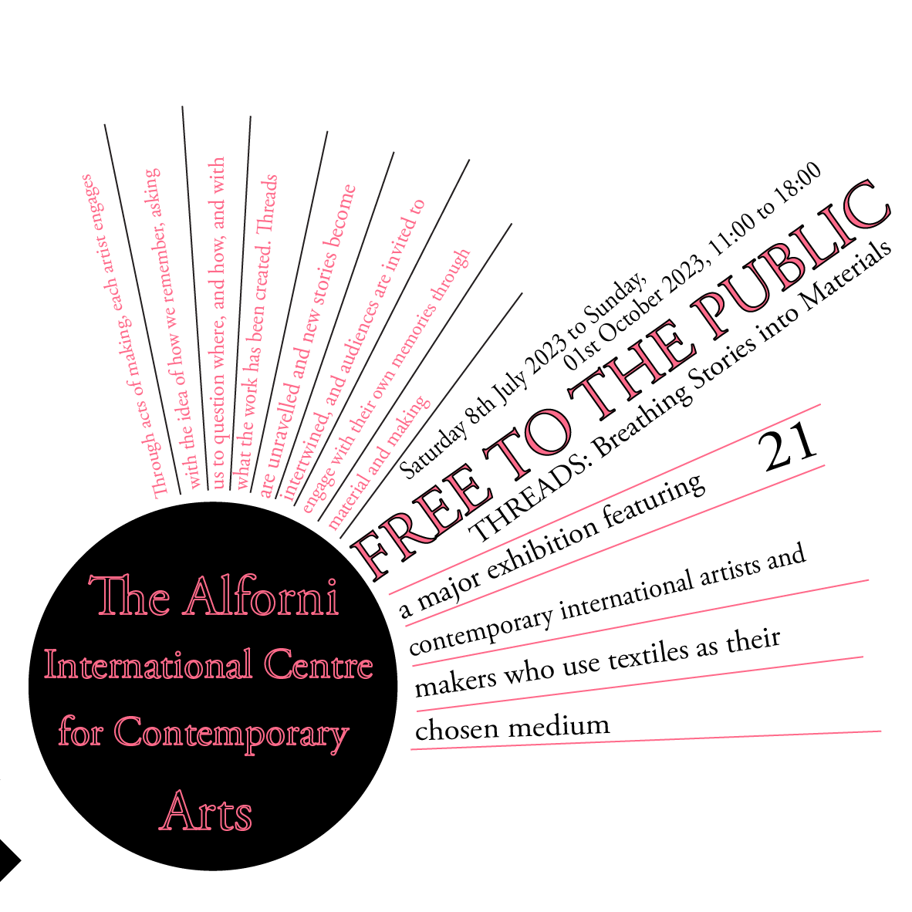
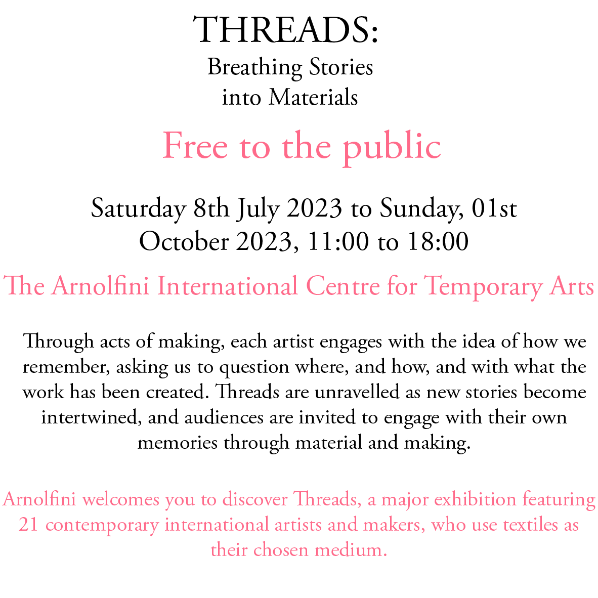
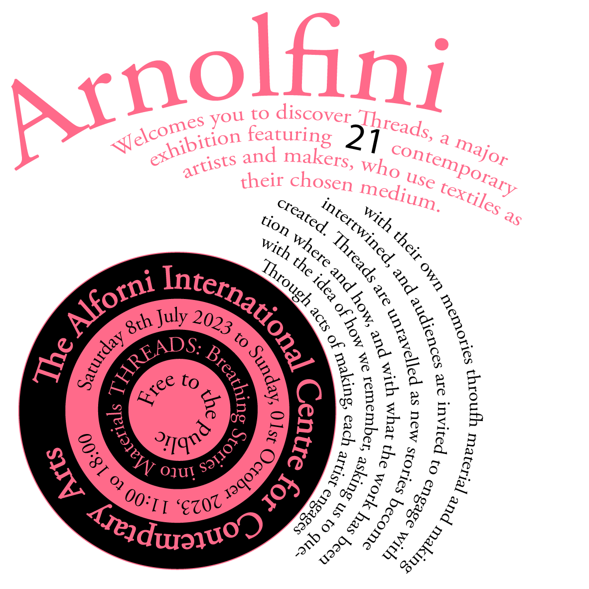
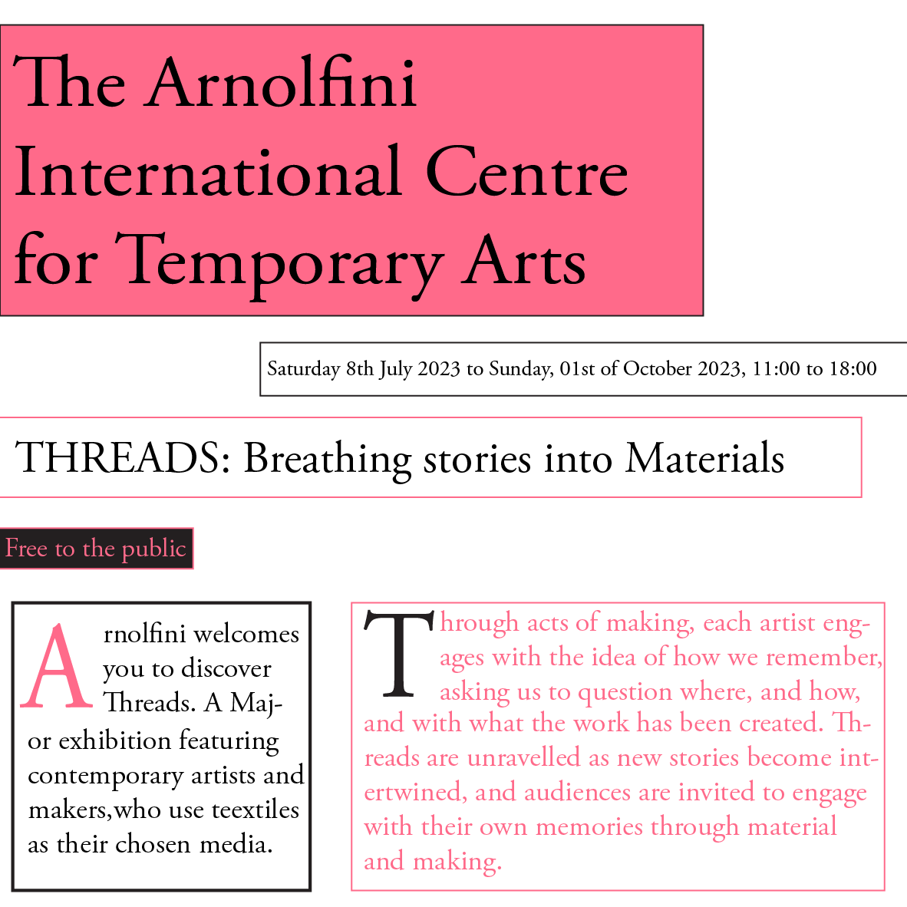
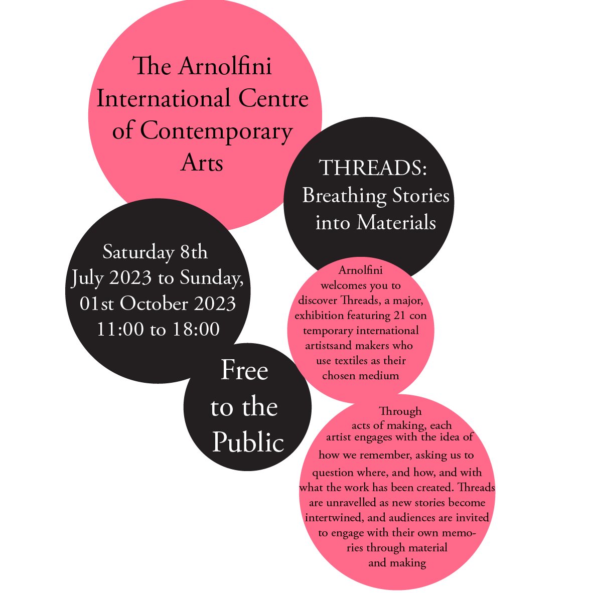
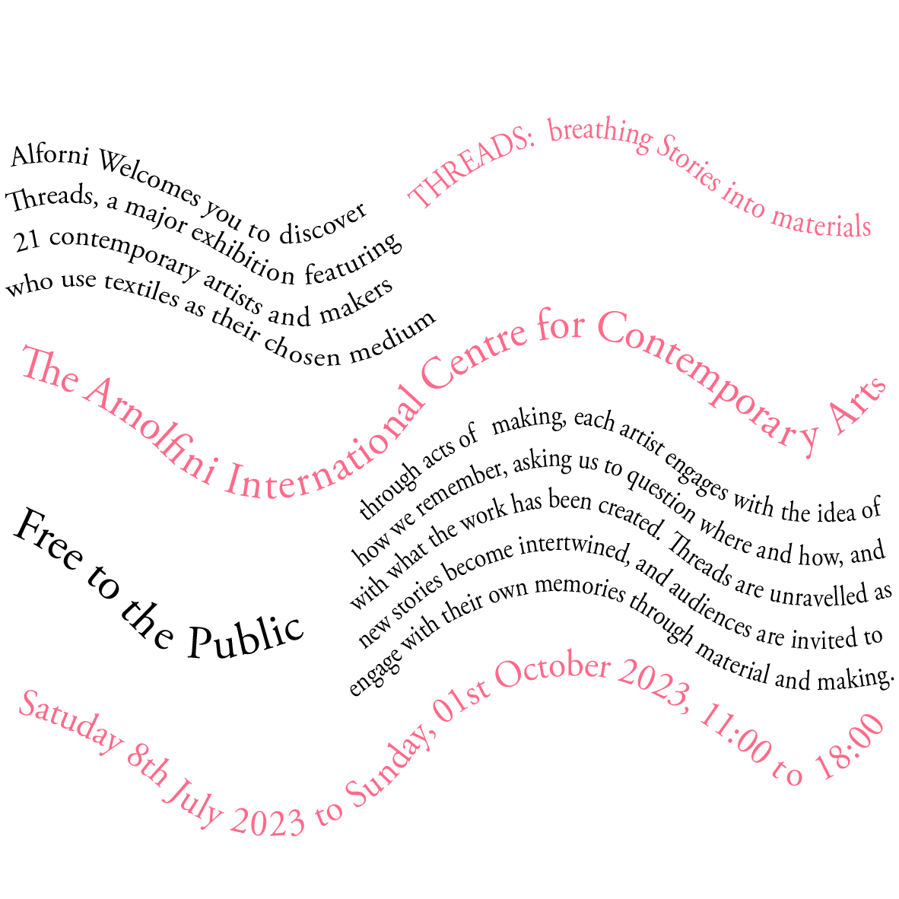
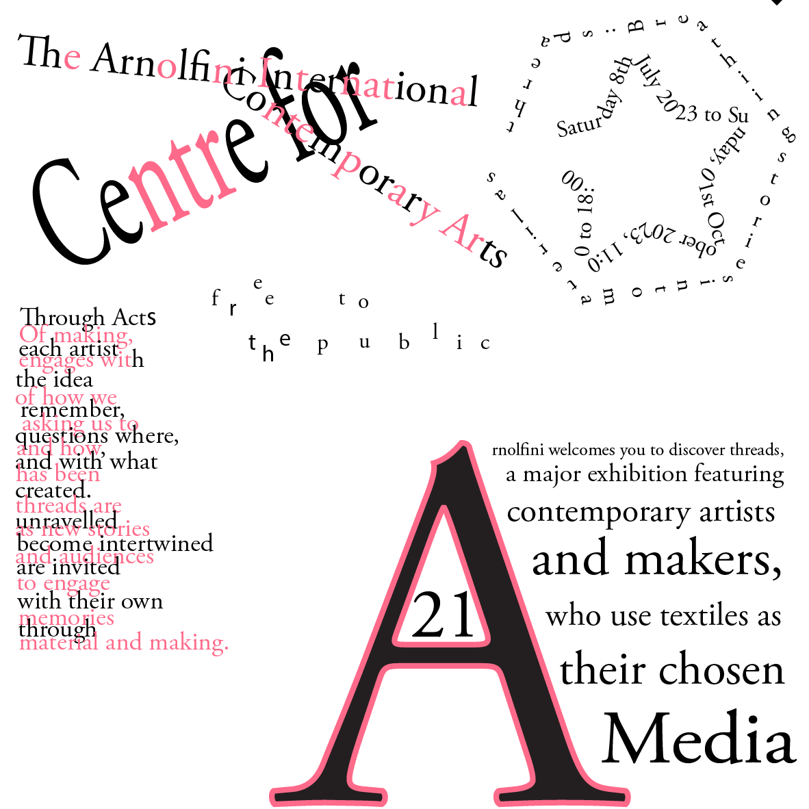

Axial
An Axial typographic system is where all the lines of writing are at an angle (on an axis). I incorporated this into my design my starting with the title on the black rectangle in the middle of the page. Afterwards, I based all of the other texts around the axis of the title. I think that i encapsulated this concept in my design well, however i could have used up more white space.
Radial
A Radial typographic system is where the lines of text come out of a certain point. Essentially like a sun (the main point) and then the lines of text come outwards from this like rays from the sun. I think i enhanced this this in my design well, including different sizes and colours. However not all the lines fit well (the dates).
Bilateral
Bilateral typographic systems are commonly used as they are centered from the middle margin of the page. This is quite repetative and boring however it is an easy concept. All mine paragraphs are centered to highlight this, however it does look quite boring and isnt very eyecatching. I tried to alternate colours to make it more exciting, but its still plain.
Dilatational
A Dilatational typographic system is where there is a repetitive circular pattern of words. A commom example of this is the rings inside a tree trunk. As you can see, i have used that as a key idea in my design. However, i do think that it is a bit repetitive and not all the components blend together as well as i would have liked them too.
Grid
The Grid typographic system is made out of squares to create columns and rows. It helps to divide your page up with different bits of information. Its a classic systems which is seen everywhere to display lots of information. I think the bottom half of my typographic system reinforces this idea better than the top half. However running headers do also feature.
Modular
A modular typographic system is one with a limited amount of shapes. I have chosen to use circles but it can be any shape, and turned upside down or on its side. The repetition of the shapes help break up shapes evenly. The overlapping of mine could have been done in a better way but it was hard to overlap them otherwise it would cover the text.
Transitional
The Transitional typographic system is a a group of layered lines that help to tell a story. They are often layered together to look like waves if the subject has anything to do with water. I have incorporated this for mine. however it doesnt really represent anything to do with the subject.
Random
Like the title, random just means a random display of letters and words. It is definatly often unreadable. Mine is random however you can tell its still in organised sections which suggets that i could have made it a bit more random
